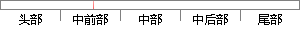

此零件由窄槽、凸台、圆槽、孔、螺纹等几何特征组成。
片段位置图

相似结果|
相似片段 1：，由零件几何特征推理搜索出螺纹联接形成的子装配。经几何检验、稳定性和紧周性检验、以及装配工具检验确定出子装配，并生成子装配零件间优先约束关系。在螺纹联接形成的子装配中，组成螺纹副两零件的几何位置
相似片段 2：2．3．1霉部件特征项目长度、宽度、高度是零件最基本的特征，除此之外，零件都是由一些几何要素构成的。图2．7所示的轴齿轮由以下部分组成：轮齿、轴颈、配合部、平键、螺纹、倒角、圆弧等。去掉次要几何特征
相似片段 3：UnloadMefrmcontent．ShowEndSub8．3零件信息的描述与输入滚珠丝杠的零件信息主要由几何特征信息、工艺特征信息组成。几何特征信息主要指零件的几何形状和尺寸，如表面形状、表面问的相互位置、尺寸及其公差等。工艺特征信息主要指毛坯
相似片段 4：的基本情况。滚珠丝杠型面特征频数分析图如图5．1所示。图5．1 滚珠丝杠零件型面特征频数分析5．1．2滚珠丝杠几何特征的组成不难发现，滚珠丝杠的几何特征都是由一些典型特征型面组成的，不同类型的滚珠丝杠只是
相似片段 5：(2)辅特征指依附于主特征之上的几何形状特征，是对主特征的局部修饰，反映零件几何形状的细微结构。HZ．PPES系统共搜集了15种辅特征。如：螺纹、倒角、键槽、轴向螺纹孔、中心孔等。特征在几何上可以是
相似片段 6：等。辅特征是依附于主特征之上的几何形状特征，是对主特征的局部修饰，反映了零件几何形状的细微结构。辅特征主要有以下几种类型与特点：（1）辅特征附于主特征，也可依附于另一辅特征。例如将圆体柱与辅特征螺纹
相似片段 7：不允许在装配模型里对子零件模型上形状特征进行发布。 离关系。零件装配特征的选择是跟零件的几何结构、零件在组合件中的作用和零件的工作自由度有关的。比如螺母的作用是通过螺纹孔与螺钉配合，并且螺母下表面
相似片段 8：_J．艺。(2)辅特征：辅特征是依附于主特征之上的几何形状特征，是对于主特征的局部修改，反映了零件J-Ll"f形状的细微结构。辅特征可以依附于主特征，也可以依附于另一辅助特征。辅特征可以分为螺纹、花键
相似片段 9：，则称这对接触面为螺纹孔柱接触．两个零件间可能在多处存在接触，根据面约束关系、接触面类型、接触面对数、面间位置关系及零件的几何形状特征，可推理确定两个零件间的几何匹配关系。本文仅对零件间的面接触类型为
相似片段 10：主特征是指自身可以单独存在的形状特征，它在零件中具有独特的功能和特定的加工方法，构成零件的主体形状，如组成零件的各个段。4．2．1主特征的分类幽4-l特征库的结构图4—2是主特征的细化，根据内外主
|
※ 片段修改建议 ※
近似词参考：- 螺纹：罗纹
- 几何：多少
- 特征：特点 特性
- 组成：构成
系统自动生成语句：此零件由窄槽、凸台、圆槽、孔、罗纹等多少特点构成。
注：本片段修改建议为系统自动生成，仅供参考。